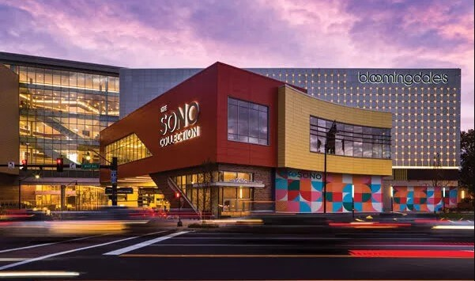
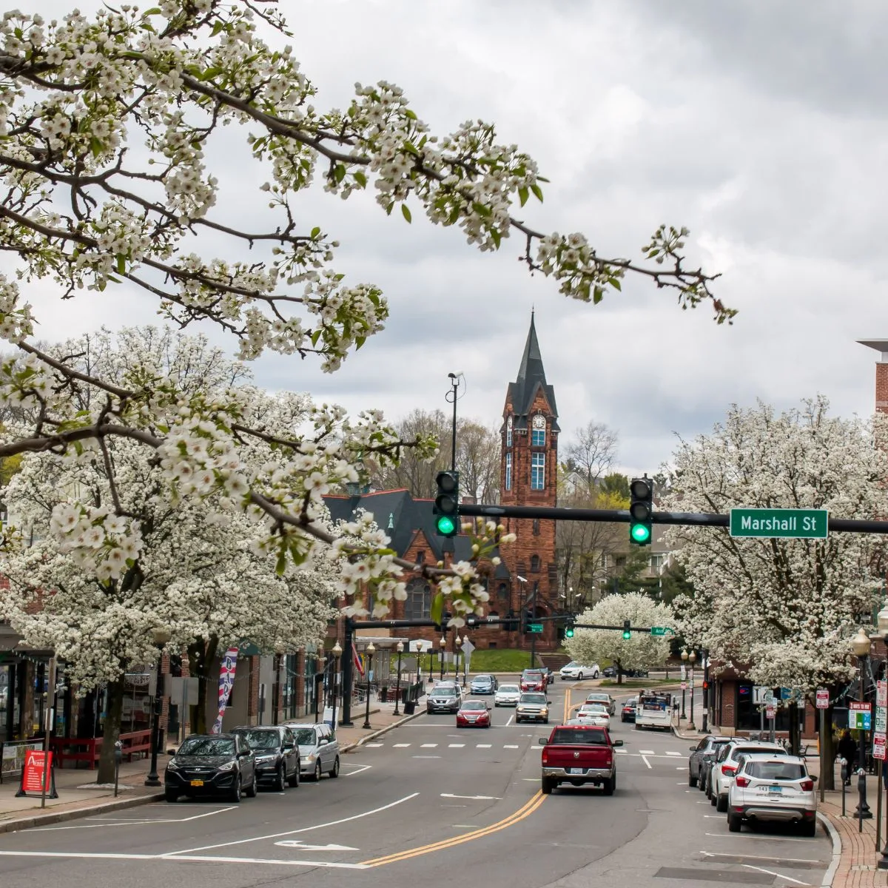

Norwalk
Norwalk is one of the best places to live in Connecticut.(Resident, 2023)

Inception Year
Norwalk was incorporated on September 11, 1651.

the City's Population
The estimated population of Norwalk was around 91,194.

Classification
Norwalk is classified as urban suburban mixed city.

Average Income
Median household income in Norwalk is $42,276, according to United States Census Bureau.Connecticut median household income is $83,771.Compared to the rest of the State, average income of Norwalk is lower than the rest of the state.

State Region
Norwalk is a city located in Western Connecticut, in southern Fairfield County, on the northern shore of the Long Island Sound.